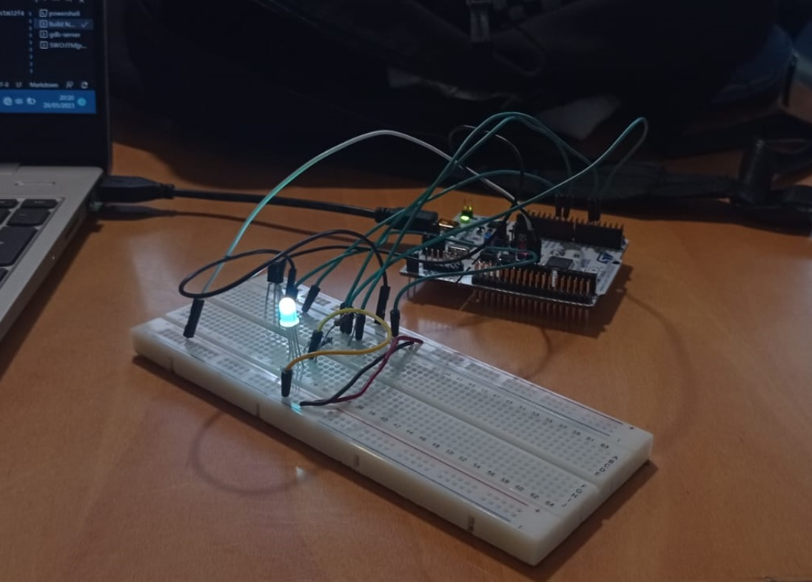
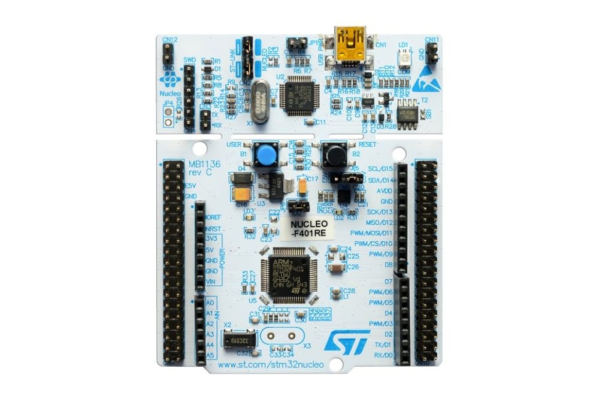
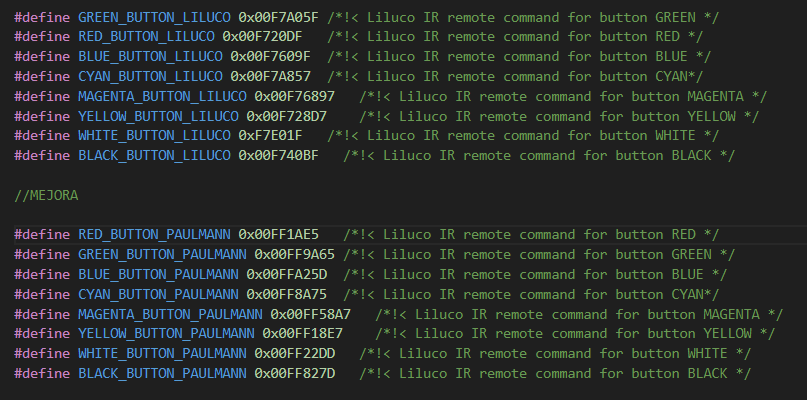

SDG2 · 2022–2023 · Proyecto embebido
Retina: transmisor y receptor RGB sobre STM32
Proyecto en C para la Nucleo STM32F446RE que coordina botón, transmisión, recepción y salida RGB mediante máquinas de estados finitas. La mejora final amplía el receptor para reconocer códigos procedentes de mandos de diferentes fabricantes.
El README identifica la versión como “V4 + Mejoras”. La entrega incluye código, documentación Doxygen, fotografías del montaje y una mejora propia para reconocer códigos de dos familias de mandos (Liluco y Paulmann), además de un vídeo demostrativo enlazado desde la propia documentación.
Arquitectura
Varias máquinas de estados cooperando.
Entrada
Gestión del pulsador y de las señales recibidas desde el hardware.
Transmisión
FSM específica para secuenciar los códigos a emitir.
Recepción
Decodificación de tramas y reconocimiento de comandos recibidos.
RGB
Mapeo del comando recibido a estados de color del LED.
Mejora propia
Compatibilidad con más de un mando.
Evidencias
Hardware y código.



Stack
Tecnologías empleadas
Entregables seleccionados